어디서부터 시작할까요?
질문 하나만 골라도 맞는 글로 안내합니다.
지금 바뀌는 제도
출발 전에 꼭 알아야 할 변경 사항
도시별 여행 가이드
공항 접근, 숙소 권역, 아이 동반 코스, 예산까지 도시마다 정리했습니다.
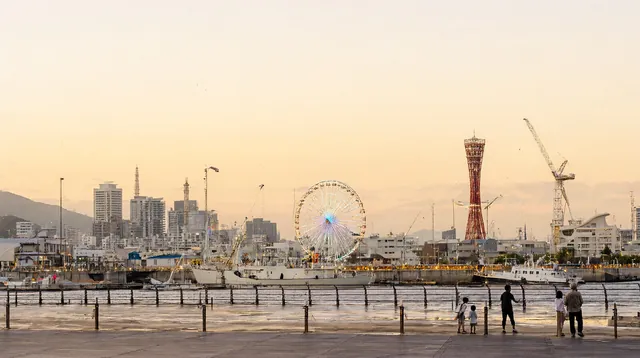
고베산노미야 거점으로 고베공항 직항과 하버랜드·아리마온천 당일치기를 묶는 가족 여행 허브
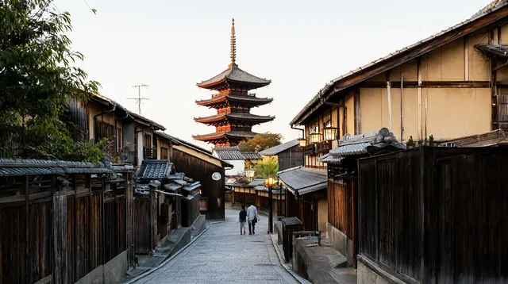
교토공항이 없는 교토의 접근 방법, 숙소 권역, 아이와 함께하는 일정·예산 정리
구마모토구마모토성과 아소, 구로카와를 렌터카로 잇는 가족 여행. 지진 후 현황 포함
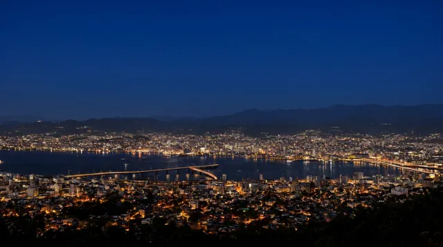
나가사키세계 신3대 야경과 짬뽕, 하우스텐보스를 묶는 규슈 서부 역사 항구 도시
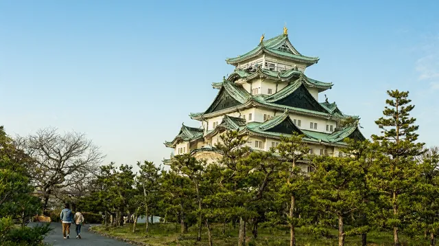
나고야도쿄·오사카 사이 통과 도시. 직항이 많고, 천수각 내부는 폐관 중이라 본마루어전·나고야메시·수족관 중심 여행
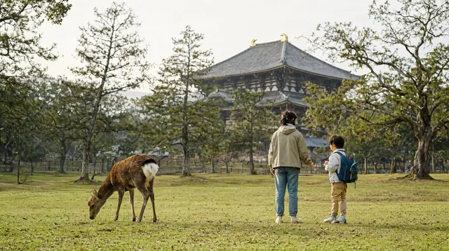
나라사슴과 대불, 오사카에서 35분 거리의 고도 나라. 당일치기와 1박 구성, 아이 동반 포인트를 정리했습니다
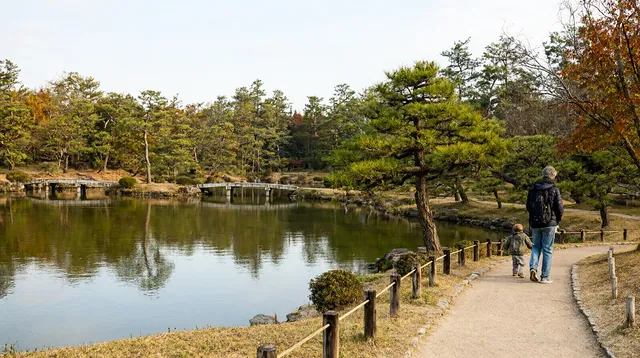
다카마쓰사누키 우동 본고장, 리쓰린 공원과 나오시마 예술의 섬의 관문. 인천 직항 약 1시간 40분
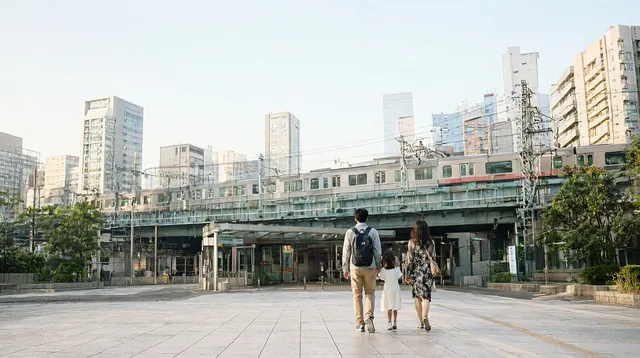
도쿄하네다·나리타 두 공항, 숙소 권역과 Suica 선택이 핵심인 가족 도시
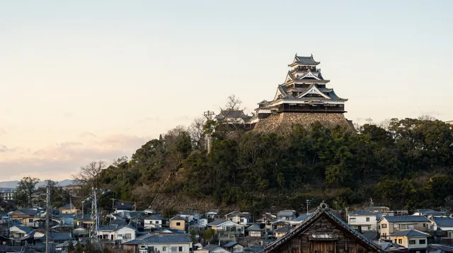
마쓰야마도고온천과 마쓰야마성을 느리게 도는 시코쿠 소도시 가족 여행
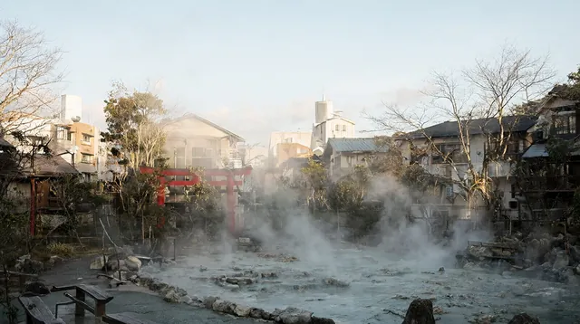
벳푸지옥순례와 온천, 모래찜질을 하루 안에 즐기는 규슈 동부 온천 도시 (직항은 대한항공 동계 한정)
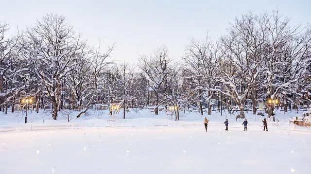
삿포로겨울 눈축제와 스프카레·미소라멘, 신치토세공항에서 시내까지 쾌속 37분
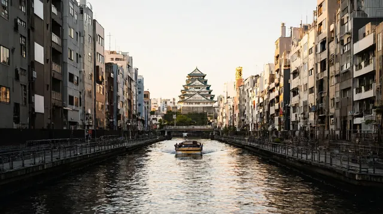
오사카가족 여행자를 위한 오사카 허브: 이동, 숙소, 일정, 아이 코스, 예산 정리
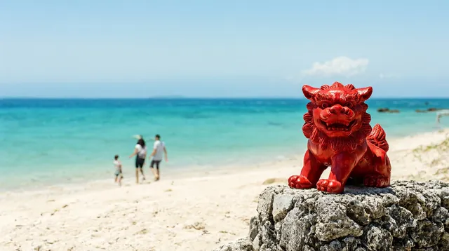
오키나와오키나와 본섬 여행. 인천 직항 약 2시간 20분, 유이레일·해변·수족관 중심의 가족 여행
요코하마하네다·나리타 공항에서 들어와 도쿄에서 약 30분, 바다와 미나토미라이를 즐기는 항구 도시
하코네온천과 아시노코 호수, 로망스카로 가는 간토의 대표 힐링 권역
후쿠오카공항에서 하카타역까지 지하철 약 5분, 아이와 가기 쉬운 근거리 도시
메뉴별로 찾기
준비부터 현장까지 여행 순서대로